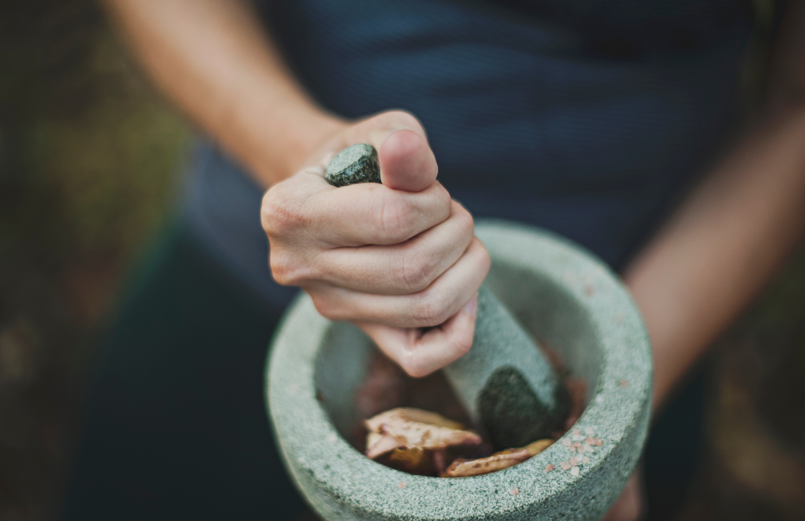
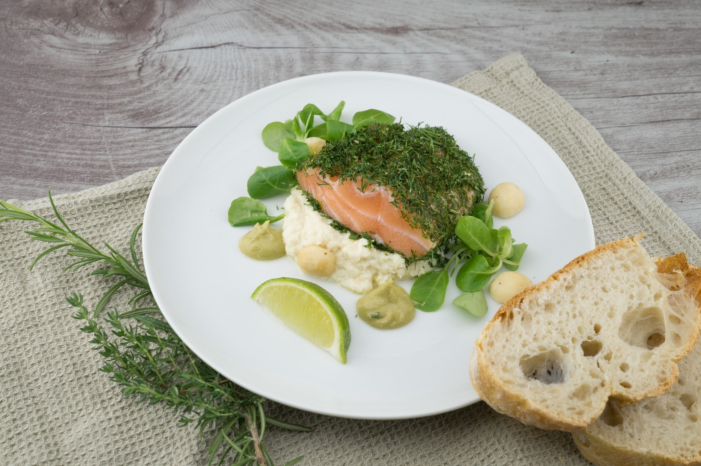

Why Herbs and Spices?
In general use, herbs are plants with savory or aromatic properties that are used for flavoring and garnishing food, medicinal purposes, or for fragrances; excluding vegetables and other plants consumed for macronutrients. A spice, on the other hand, is a seed, fruit, root, bark, or other plant substance primarily used for flavoring, coloring or preserving food.
Herbs have a variety of uses including culinary, medicinal, and in some cases, spiritual whereas spices are distinguished from herbs, which are the leaves, flowers, or stems of plants used for flavoring or as a garnish.



General usage of the term "herb" differs between culinary herbs and medicinal herbs; in medicinal or spiritual use, any parts of the plant might be considered as "herbs", including leaves, roots, flowers, seeds, root bark, inner bark (and cambium), resin and pericarp.
Many spices have antimicrobial properties. This may explain why spices are more commonly used in warmer climates, which have more infectious diseases, and why the use of spices is prominent in meat, which is particularly susceptible to spoiling. Spices are sometimes used in medicine, religious rituals, cosmetics or perfume production.
We offer all the herbs and spices that are presented to you in the home page. If you would like to business with us, as in if you would like to buy any of the items present in the homepage, then kindly fill up the contact form and an executive from our team will get in touch with you to discuss further.